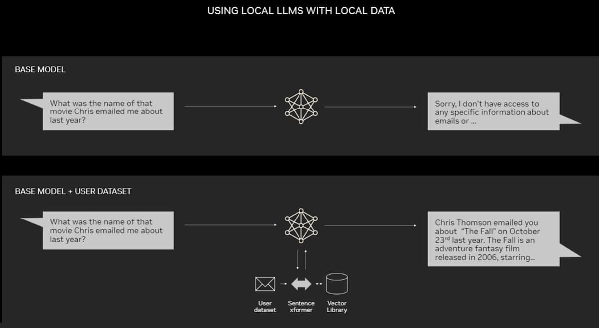
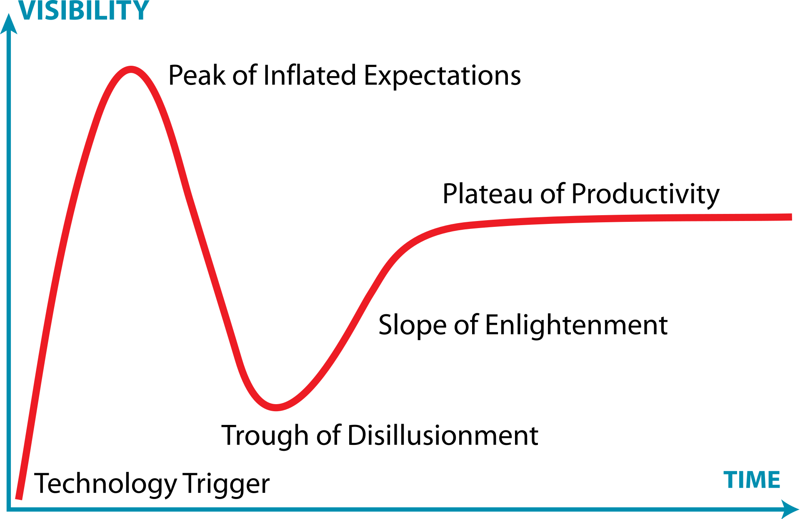

AI/ML In Public Health
Kelsey Florek, PhD, MPH
Senior Genomics and Data Scientist
Wisconsin State Laboratory of Hygiene
June 27, 2024
www.k-florek.net/talks
- Have you ever used AI/ML/Generative AI if so, then how?
- What concerns do you have about the usage of AI, in general or in public health?
- What benefits do you do think AI provides or could provide?
Artificial Intelligence
Software that allows machines or computer systems to perceive their environment and use learning and intelligence to achieve a defined goal.

Machine Learning
An area in artificial intelligence with a focus on statistical algorithms that can learn from data and generalize to unseen data.

Deep Learning
A subset of machine learning methods that are based on neural networks, with deep implying multiple layers.

Generative AI

- a subset of AI and a type of deep learning model
- designed to create new and "original" content
- trained on massive datasets of existing content
Primer - AI/ML models and approaches
Model training paradigms
- Supervised Learning
- Unsupervised Learning
- Reinforcement Learning
- Online Learning
- Batch Learning
- Meta-learning
- Semi-supervised Learning
- Self-supervised Learning
- Curriculum Learning
- Rule-based Learning
- Quantum Machine Learning
Supervised Learning
A supervised machine learning approach requires labelled input and output data, allowing human oversight of the model's classification.
- Regression (prediction of a continuous variable):
- Linear Regression
- Polynomial Regression
- Classification (prediction of a categorical variable):
- Decision Trees
- Random Forest
- Logistic Regression
- K-Nearest Neighbors
Unsupervised Learning
An approach that can be used to group data when no labels are present. Typically applied to cases where the model is representative of the data to ask
- Clustering:
- K-Means
- DBSCAN
- Hierarchical Clustering
- Dimensionality Reduction:
- Principal Component Analysis (PCA)
- Singular Value Decomposition (SVD)
Neural Networks

A computational model inspired by biological neural networks, inspired by the behavior of neurons.
Can be supervised, semi-supervised, self-supervised, unsupervised.
Can you figure out how it works?

- How well did it seem to work?
- Did you find any patterns between the input/hidden layers/output?
- If you can't understand how it works, can you trust or validate its answers?
Natural Language Processing (NLP)
Machine learning models developed around language and speech.
Syntactical analysis: meaning of a word or phrase and rules of grammar
Semantical analysis: interpret meaning of a set words within the context of the text
NLP and Deep Learning
Deep learning using neural networks has become the dominate method of NLP, using massive volumes of text and voice to an unprecedented level of accuracy.
Transformers: Combining the position of words and subwords (tokenization) along with dependencies and relationships between words (self-attention) allows for calculating different parts of language together.
A question of experience - How much training do models need?

- Type of problem - supervised vs unsupervised; image recognition or NLP
- Model Complexity - more layers or nodes = more training data needed
- Data Quality and Accuracy - noisy data will require more training data
Training ChatGPT Models
- Estimated $100 Million to Train GPT-4
- Trained on roughly 13 trillion tokens / 10 trillion words
AI/ML in Public Health
Applying AI in public health
- Disease Forecasting
- Risk Prediction
- Health Diagnosis
- Spatial Modeling
- Surveillance
- Modeling
SARS-CoV-2 Lineage - Pangolin
- Multinomial Logistic Regression (pangolin 2.0)
- Decision Trees (pangolin 2.0 and 3.0)
- Random Forests (pangolin 4.0)

Antimicrobial Susceptibility Genotypic Prediction
"Using phenotypic AST profiles as the reference, error designation and accuracy statistics were performed for 152 bacterial-drug combinations with an overall categorical agreement of 80.9% and very major, major, and minor error rates of 3.8%, 23.3%, and 11.8%, respectively."
Enhanced Detection System for Healthcare-Associated Transmission (EDS-HAT)
Combination of WGS surveillance and ML of electronic health records to identify outbreaks and transmission routes.
"EDS-HAT could have prevented 25 (lower bound) to 63 (upper bound) transmissions. Moreover, 3.1–8.0 fewer 30-day attributable readmissions and 1.6–3.3 fewer deaths would have occurred had EDS-HAT been running in real time."
Generative AI in healthcare
- cross-sectional study of 195 randomly drawn patient questions from Reddit’s r/AskDocs
- compared physician’s and chatbot’s responses to patient’s questions asked publicly on Reddit’s r/AskDocs
- chatbot responses were preferred over physician responses and rated significantly higher for both quality and empathy
- NYUTron - an LLM trained on clinical language and fine-tuned across a wide range of clinical and operational predictive tasks
- 30-day all-cause readmission prediction
- in-hospital mortality prediction
- comorbidity index prediction
- length of stay prediction
- insurance denial prediction
Challenges and Considerations of AI
Reaching the limit - AI hallucinations
AI hallucination - a phenomenon where a large language model perceives a pattern that is nonexistent to human observers resulting in outputs that are nonsensical or inaccurate.
- LLM Hallucinations
- False Facts - confidently state incorrect information
- Imaginary Scenarios - entirely fabricated stories or events
- Nonsense/Incoherence - output that doesn't follow any logical flow or grammatical rules
Enhancing Accuracy and Reliability with RAG
Retrieval-augmented generation (RAG) - enhances accuracy and reliability of generative AI models by linking AI services to external resources.
Gartner hype cycle

Conclusions
Key Points
- AI/ML - broad field with lots of different models and training approaches
- many practical applications from operations -> research
- rapidly moving field with many advancements
- ongoing ethical and legal concerns
- robust and generalizable models require patient data from multiple centers but privacy a data security remains critical
- lack of transparency in AI-based systems